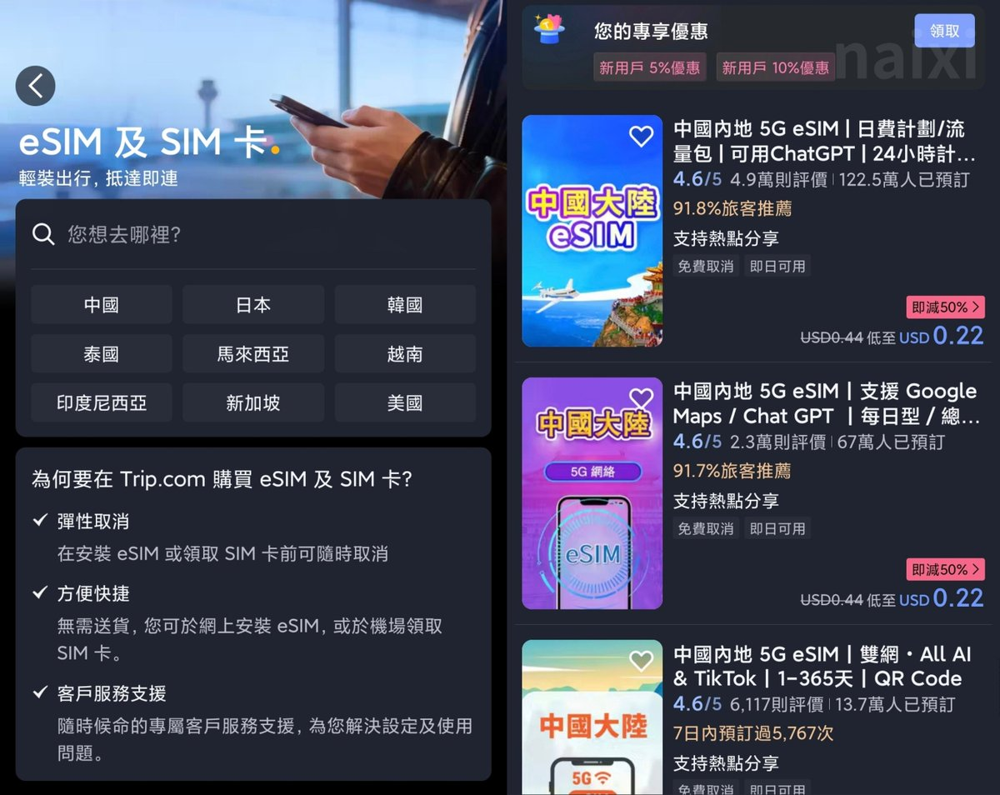
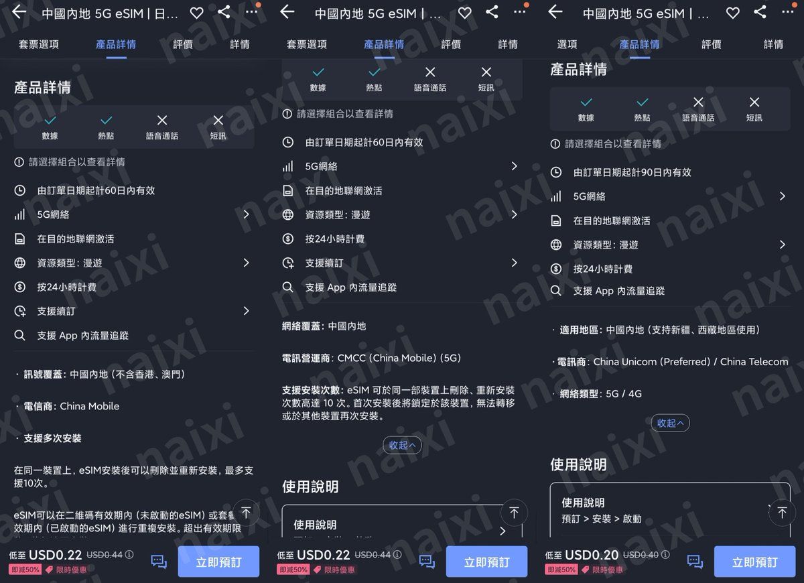
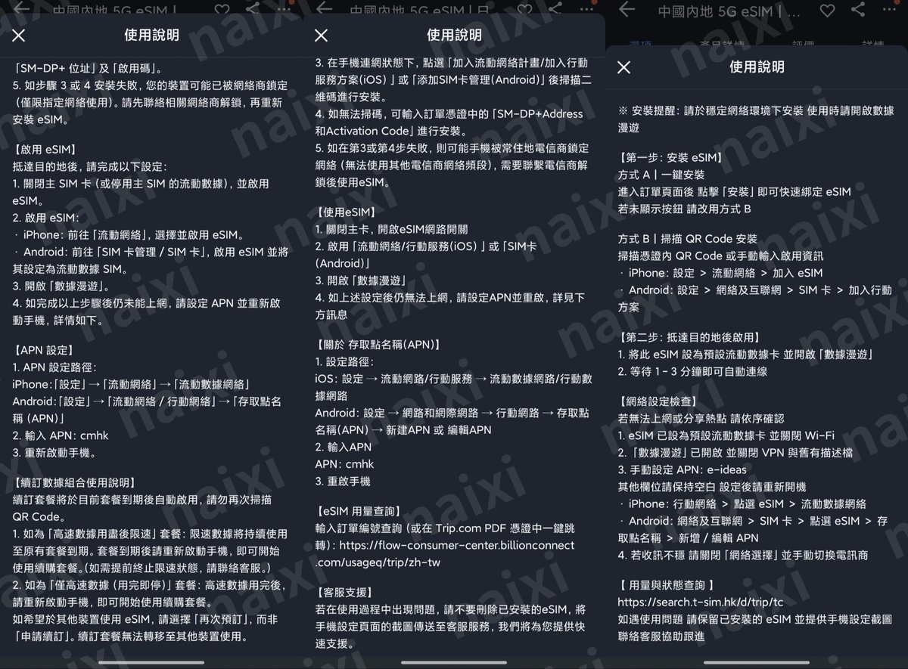

随着国内各家eSIM提供商纷纷掐掉中国大陆eSIM套餐，受影响最大的应该是中国移动CMI渠道的eSIM（含自家CMLink GDS）在6月17日禁止在中国大陆激活，需要在境外连接任意基站后再前往中国大陆才能启用
不少OTA平台提供的eSIM也是使用China Mobile、CMCC网络会受此影响，特征是APN为cmhk（可在安装说明中看到）
以Trip为例我在评论区放ref可以打9折，在eSIM目的地选择「中国」，这里我选三家做参考。在产品详情会显示使用的运营商，点进「使用说明」可看到更详细的内容。前两家漫游移动，APN都是cmhk，区别在于CMLink GDS和亿点连接。而第三家支持漫游联通和电信两网，APN是e-ideas，老粉都知道是SingTel
当然新规只是多了一步在中国境外激活的步骤，仅影响中国移动CMLink资源，预测下一波就是限制内地人到港澳上台。当然，国外运营商是不影响的，会有动作的基本是中资运营商，也没必要过多恐慌。随着旅行eSIM的发展，漫游的价格会越来越便宜，国内eSIM运营商也会打着全球上网的擦边球继续为“外宾”提供服务。
不少OTA平台提供的eSIM也是使用China Mobile、CMCC网络会受此影响，特征是APN为cmhk（可在安装说明中看到）
以Trip为例我在评论区放ref可以打9折，在eSIM目的地选择「中国」，这里我选三家做参考。在产品详情会显示使用的运营商，点进「使用说明」可看到更详细的内容。前两家漫游移动，APN都是cmhk，区别在于CMLink GDS和亿点连接。而第三家支持漫游联通和电信两网，APN是e-ideas，老粉都知道是SingTel
当然新规只是多了一步在中国境外激活的步骤，仅影响中国移动CMLink资源，预测下一波就是限制内地人到港澳上台。当然，国外运营商是不影响的，会有动作的基本是中资运营商，也没必要过多恐慌。随着旅行eSIM的发展，漫游的价格会越来越便宜，国内eSIM运营商也会打着全球上网的擦边球继续为“外宾”提供服务。


